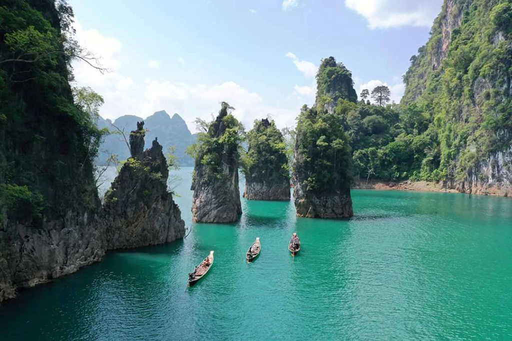
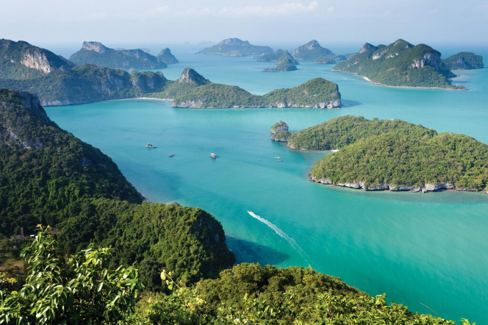
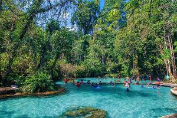

ข้อมูลทั่วไป
- ชื่อจังหวัด: สุราษฎร์ธานี
-
ตำแหน่งที่ตั้ง: ตั้งอยู่ในภาคใต้ของประเทศไทย
เป็นจังหวัดที่มีพื้นที่มากที่สุดในภาคใต้
- ทิศเหนือ: ติดกับจังหวัดชุมพร
- ทิศใต้: ติดกับจังหวัดนครศรีธรรมราช
- ทิศตะวันออก: ติดกับอ่าวไทย
- ทิศตะวันตก: ติดกับจังหวัดระนองและจังหวัดพังงา
สถานที่ท่องเที่ยว
- หมู่เกาะสมุย: เกาะที่มีชื่อเสียงระดับนานาชาติ เต็มไปด้วยชายหาดที่สวยงามและสถานที่พักผ่อนสุดหรู
- เขื่อนรัชชประภา (เขื่อนเชี่ยวหลาน): แหล่งท่องเที่ยวที่โดดเด่นด้วยวิวทิวทัศน์เขาหินปูนและอ่างเก็บน้ำที่สวยงามจนได้รับฉายาว่า "กุ้ยหลินเมืองไทย"
- อุทยานธรรมเขานาในหลวง: มีสิ่งที่โดดเด่นคือ ซุ้มประตูพุทธวดี 9 ยอด ในช่วงเวลาเช้ามีแสงกระทบประตูยิ่งมีความงดงามและมีมนต์ขลัง
- วัดพระบรมธาตุไชยา: วัดสำคัญที่เป็นสัญลักษณ์ทางพุทธศาสนาและประวัติศาสตร์ของจังหวัด
สัญลักษณ์ประจำจังหวัด
- ตราประจำจังหวัด: รูปพระบรมธาตุไชยาที่อยู่ในซุ้มเรือนแก้ว
- ดอกไม้ประจำจังหวัด: ดอกพะยอม
- คำขวัญจังหวัด: "เมืองร้อยเกาะ เงาะอร่อย หอยใหญ่ ไข่แดง แหล่งธรรมะ"
Highlight

เขื่อนรัชชประภา

เกาะสมุย

ป่าต้นน้ําบ้านน้ําราด